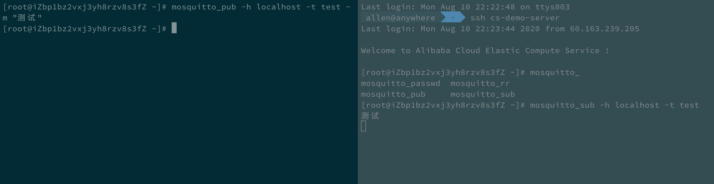
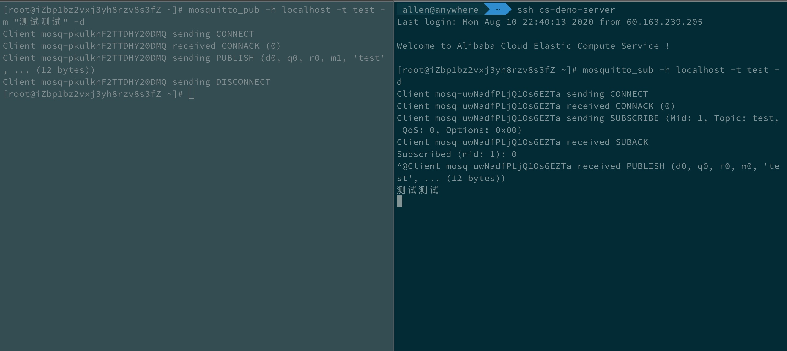

MQTT技术选型预研
MQTT 概述
MQTT全称为 Message Queue Telemetry Transport 即消息队列遥测传输协议。是一个基于发布/订阅范式的消息协议。MQTT协议是基于TCP/UDP协议之上的应用协议，是为硬件性能低下的远程设备以及网络状况糟糕的情况下而设计的发布/订阅型消息协议。
MQTT协议是基于TCP实现的消息型协议，MQTT-SN是基于UDP实现的用于在蓝牙上传输
服务质量(QoS)
对于消息型协议，有一个服务质量的概念。标准的定义如下：
QoS 0
最多一次传送（只负责传送，不保证消息必达）
QoS 1
至少一次传送（确认数据到达）
QoS 2
正好一次传送（确认数据到达，且只到达一次）
实现对比
目前MQTT标准协议的实现有很多，考虑到整个微服务架构和团队技术栈建立在Java和Spring之上。因此在重点对比两个中间件EMQX, mosquitto。
- 特性对比
| 特性 | EMQ X | Mosquitto |
|---|---|---|
| MQTT协议版本 | v3.1，v3.1.1，v5.0 | v3.1，v3.1.1 |
| 兼容协议 | Stomp协议，MQTT-SN协议，CoAP协议，Stomp/SocketJS | 不支持 |
| QoS | QoS0，QoS1， QoS2 | QoS0，QoS1， QoS2 |
| TCP/SSL | 支持 | 支持 |
| MQTT/Websocket/SSL | 支持 | 支持 |
| HTTP 消息发布接口 | 支持 | 不支持 |
| 系统主题 | 支持 | 不支持 |
| 共享订阅 | 支持 | 不支持 |
| 客户端在线状态查询/订阅 | 支持 | 不支持 |
| 认证方式 | 客户端ID或IP，用户名密码，LDAP，Redis｜MySQL | PgSQL | MongoDB | HTTP 认证支持， Cookie认证，ACL访问控制 | 客户端ID或IP，用户名密码，ACL访问控制 |
| 集群 | 支持k8s部署和发现 | 不支持，只能bridge方式做伪集群。真集群版本需要参考开源代码实现。 |
| 限制 | 消息速率限制，链接速率限制 | 不支持 |
| 消息类型 | 普通消息、延时消息、遗嘱消息、消息持久化（收费方式支持） | 普通消息、延时消息、遗嘱消息 |
| 开发语言 | Erlang/OTP | C/C++ |
| 性能 | 单节点100万并发连接 | 单节点10万并发连接 |
Tips
更多特性对比说明可以参考 MQTT官方特性和性能对比
Mosquito 安装部署
此处以centos 7.6为例
Step1-安装Mosquito Broker
首先检查是否存在安装包。执行如下命令
1 | |
Tips: centos默认没有mosquitto包，需要安装额外的包管理器epel-release。执行命令完成包管理器的安装
1 | |
接下来执行如下命令即可完成broker 的安装。
1 | |
完成安装后，执行命令来测试是否安装成功
1 | |
执行完上述命令后，可以执行
1 | |
或者
1 | |
来检查是否成功启动。mosquitto默认会监听1883端口
Step2-测试消息订阅/发布
mosquitto安装完成后，默认会带有2个命令行工具mosquitto_sub|mosquitto_pub分别用来订阅主题和发布消息。
首先，我们另外起一个TTY，执行命令监听一个test的主题
1 | |
接着，在原来的TTY中，执行命令向test主题发布消息
1 | |
结果如图所示：
EMQX 安装部署
此处以centos 7.6为例
Step1-安装EMQX Broker
安装EMQ X 需要安装依赖包
1 | |
EMQ X安装包的源默认不在centos系统中，需要添加一个repo
1 | |
接着安装最新版本的EMQ X
1 | |
执行命令来测试是否安装成功
1 | |
执行完上述命令后，可以执行
1 | |
检查EMQ X的状态来确保已经正常启动
Step2-测试消息订阅/发布
此处我们还是采用mosquitto的2个命令行工具进行测试。
首先，我们另外起一个TTY，执行命令监听一个test的主题
1 | |
接着，在原来的TTY中，执行命令向test主题发布消息
1 | |
结果如图所示：
